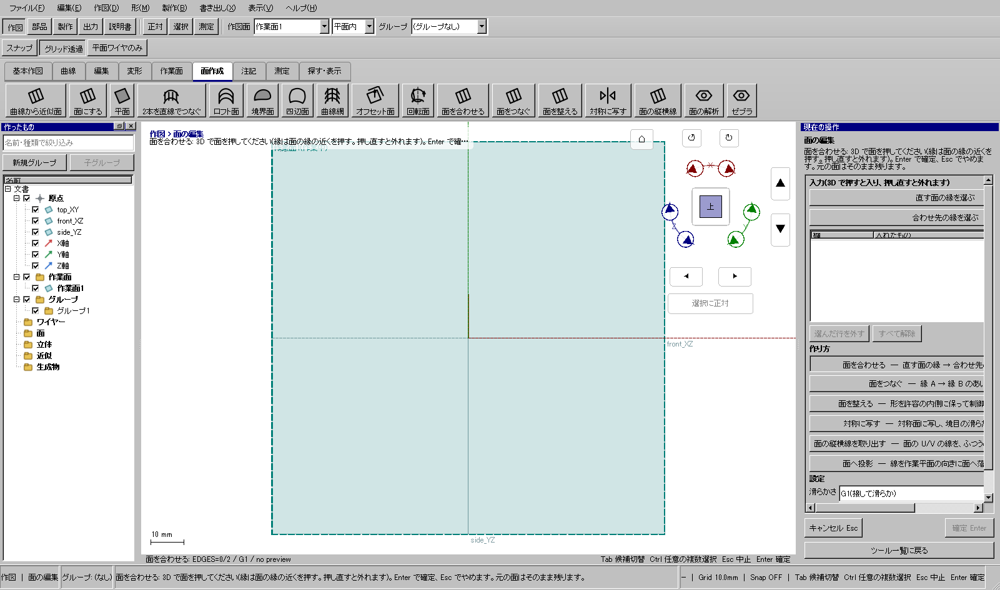
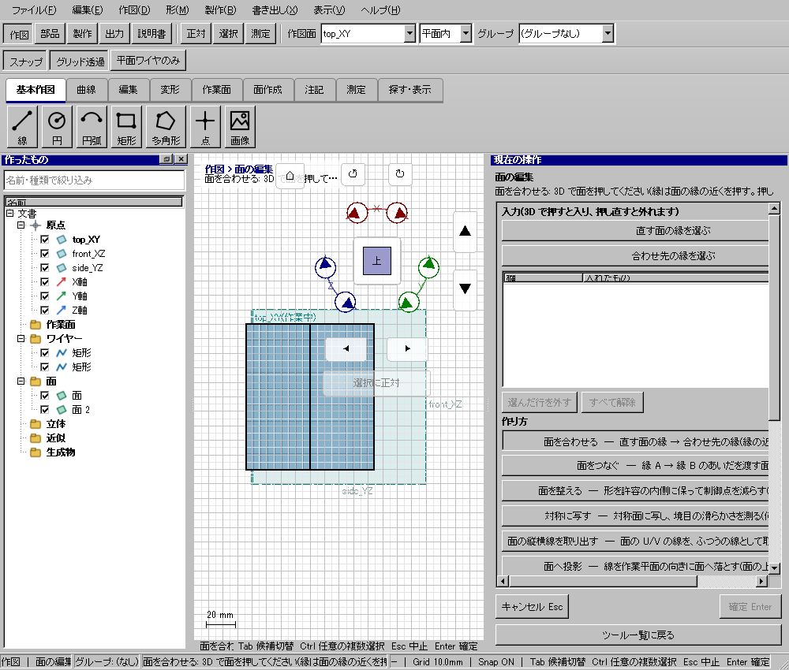

隣り合う面の接続を滑らかにする
隣り合う面の接続を滑らかにする
使う機能：面を合わせる
一方を基準に接続条件を満たす新しい面を作ります。元の両入力面は残るため、結果と重なる時は入力を隠して比較します。
指定条件で境界が接続する。基準面の形は保つ。
1 準備 — 元の図形から作る
共通境界を持つ2面を用意する。
まだ用意できていなければ、次の手順を先に行ってください。既にモデルがある場合も、例の座標・大きさ・面の向きを自分のモデルへ読み替えます。
- 高さ違いの円2本から円筒状の面を作る — 図形の作成から順に練習できます。
- 線・面・部品を取り違えずに選ぶ — 図形の作成から順に練習できます。
練習前にKCD2を別名保存します。数値の長さはmm、角度は度です。平面内のu/vと世界XYZを区別します。
2 使う道具を開く — 押す場所
- 作図 → 面作成 → その他 → 面を合わせる
別の入口：Ctrl+K → 面を合わせるを検索 → 候補の用途を確認して開きます。別モードなら「全モードから探す」をオンにします。

3 操作手順 — 一つずつ進める
1 面を合わせるを選ぶ
この段階で確認：この操作で使う入力：共通境界を持つ2面を用意する
2 変更する面、基準面、境界を指定する
この段階で確認：使う対象・値：位置のみG0／接線G1／曲率G2
3 接線でつなぐ条件で下見して確定する
この段階で確認：指定条件で境界が接続する。基準面の形は保つ。
4 設定する欄と数値
ボタン名・欄名と、今回使う値を対応させてください。項目が出ていない場合は作り方・モードが合っているか確認し、ペイン内をスクロールします。
| 見る欄・役割 | この例の設定と意味 |
|---|---|
| 面A | 変更側 |
| 面B | 基準側 |
| 縁 | 3Dで境界付近をクリック |
| 連続 | G0／G1／G2 |
選択の確認：役割欄の名前と3Dの強調を照合します。重なって拾いにくい時はTabで候補を替えます。全体を使う例では左一覧の要素名を選び、3Dの1辺選択と区別します。

この実画面は既存操作試験の一場面で、下の数値例の完成画像とは限りません。設定・選択の操作画面。具体的な完成例は段階写真のある作業例を参照してください。
5 確定して結果を確認
必要な入力と数値をそろえ、下見と状態欄を確認して、右ペインの作成・適用・確定ボタンを押します。Enter対応の道具はEnterでも確定できます。
指定条件で境界が接続する。基準面の形は保つ。
形を作る操作では、元と結果の名前を分けて一覧で確認し、必要に応じて元を一時非表示にします。表示だけの機能では形状や要素数を変えることが目的ではありません。
6 取消・やり直し・保存
Escで未確定の入力を取り消します。道具を終えるには選択（V）か別の道具へ切り替えます。確定済みの図面変更はCtrl+Z、やり直しはCtrl+Yです。
モデルの編集正本はKCD2、説明書の編集正本はKCIです。外部へ出力するだけの機能では、出力ファイルと編集元を両方残してください。
進めない場合 — 症状から戻る場所を探す
| 起きていること | 確認して直す場所 |
|---|---|
| 面名だけで縁が決まらない | 3Dの接続したい縁付近を押す |
| 元面が残る | 上書きでなく結果追加なので正常 |
この機能の入力条件：直す面の縁を、隣の面の縁へ G0/G1/G2 で合わせます。縁は面の縁の近くを押して選びます。
計算中は処理表示を見ます。失敗が出たら、対象・入力条件を変えずに何度も押すのでなく、案内にある対象と条件を確認します。
参考画面の出典と確認範囲
試験名：HP-SE-03 隣り合う面の縁を押して G1 で合わせ、元の面は残り、取り消しで消える。試験全体の結果：passed。画像はコマンド呼出し直後で、入力待ち・下見の場合もあります。各段階の完成証拠ではありません。